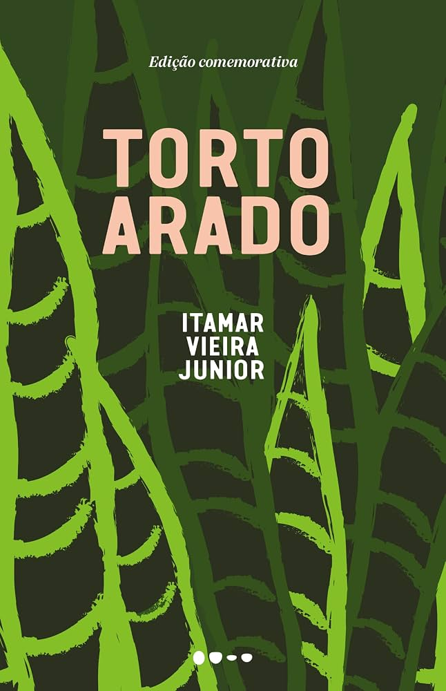
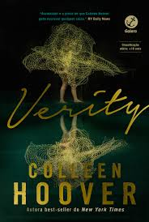

Autores em ascensão

Itamar Vieira Junior
Escritor brasileiro conhecido por abordar questões sociais, identidade e desigualdade. Sua obra Torto Arado conquistou grande reconhecimento.

Jeferson Tenório
Escritor brasileiro que aborda identidade, racismo e relações humanas. É autor de O Avesso da Pele.

Freida McFadden
Autora conhecida por seus thrillers psicológicos cheios de mistérios e reviravoltas.
Raphael Montes
Escritor brasileiro conhecido por seus romances de suspense e terror psicológico, como Jantar Secreto.

Colleen Hoover
Autora norte-americana de romances e thrillers, conhecida por obras como Verity.
Raphael Montes
Um dos nomes brasileiros de destaque no suspense contemporâneo, também autor de Suicidas.

Raphael Montes
Escritor brasileiro conhecido por suas histórias de suspense e terror. Em O Vilarejo, apresenta sete contos interligados por acontecimentos sombrios.
Raphael Montes
O autor constrói uma trama de suspense sobre uma jovem que tenta superar um trauma enquanto enfrenta novos acontecimentos misteriosos.
Jeferson Tenório
Escritor brasileiro que aborda questões raciais, identidade e relações familiares na literatura contemporânea.